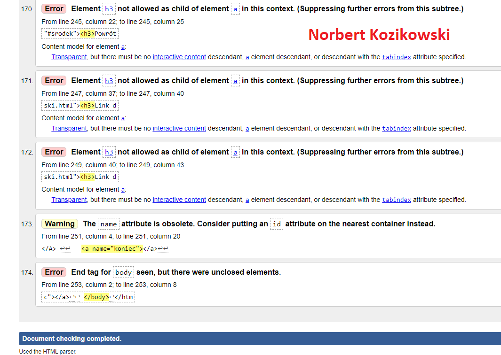
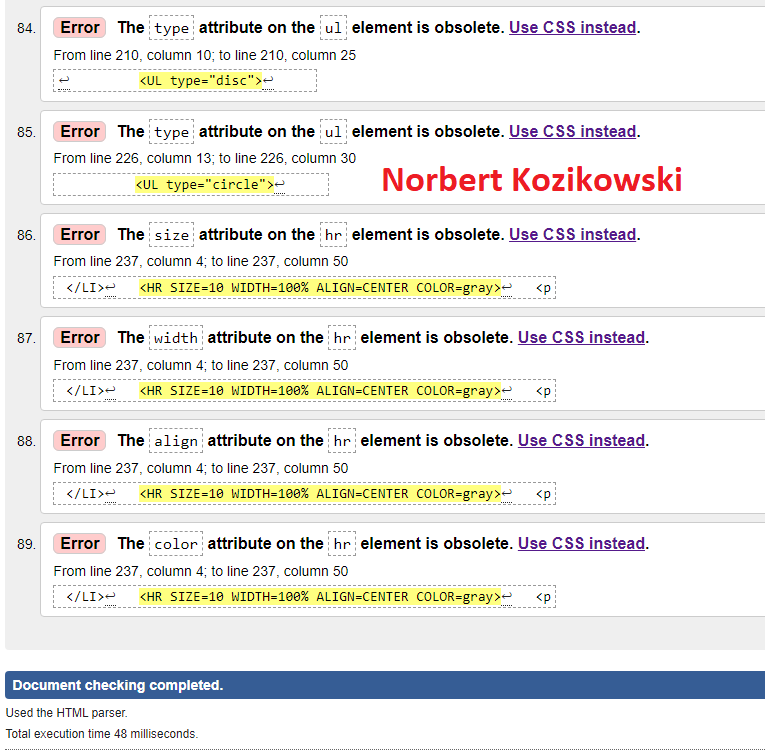

Walidacja to działanie mające na celu potwierdzenie w sposób udokumentowany i zgodny z
założeniami, że procedury, procesy, urządzenia, materiały, czynności i systemy rzeczywiście
prowadzą do zaplanowanych wyników.
Walidator HTML to specjalistyczny program lub aplikacja służąca do sprawdzania znaczników HTML
na stronie internetowej pod kątem ewentualnych błędów składniowych i leksykalnych
Strona walidatora
Zrzut przed walidacją strony

Zrzut po walidacji strony:

Wróć